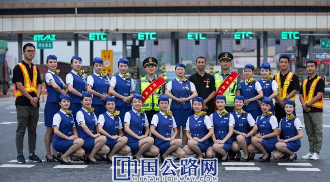

您好，欢迎来到中国高速公路网—21世纪公路网！
 来源：中国高速公路网—21世纪公路网
来源：中国高速公路网—21世纪公路网
 时间：2020-09-06
时间：2020-09-06

候选团队：“匠心蓝”创新服务队
推荐单位：四川省交通运输厅高速公路管理局
工作单位：成都高速公路股份有限公司
团队人数：20人
女性成员比例：75%
曾获奖励：
成都市总工会国际化营商环境建设先锋岗、先锋班组；
成都市总工会疫情防控“五一劳动奖章”陈耀玻；
成都交投集团“优秀共产党员”陈腾刚；
团中央“全国青年文明号”。
先进事迹：
弘扬劳模精神 彰显工匠风采
成都交投集团成都高速公路股份有限公司（简称“成高股份公司”）坚持以习近平新时代中国特色社会主义思想为指导，深入学习贯彻习近平总书记来川视察重要讲话精神，坚决执行党中央新冠疫情防控和复工复产重大决策部署，根据国务院、交通运输部撤销省界收费站和ETC推广运用工作要求，“匠心蓝”创新服务队发挥示范引领和辐射带动作用，在奋力夺取防疫经营“双胜利”中展现“成都高速”使命担当和创新力量，相关集体和个人荣获团中央“全国青年文明号”、成都市总工会疫情防控“五一劳动奖章”、成都市总工会“国际化营商环境建设先锋班组”、成都交投集团“优秀共产党员”等殊荣。
2018年4月，成高股份公司党委紧盯行业发展新趋势，抽调20名业务骨干组建“匠心蓝”创新服务队（简称“服务队”）。两年来，服务队坚持“弘扬劳模精神·创造优秀业绩”工作理念，设立服务先锋、智慧先锋、畅行先锋、文化先锋共4个分队，搭建“龚邓敏劳模工作室”“钟华伟创新工作室”“三心服务队”等平台，落实“师带徒”“实训基地”“课题研究”等机制，深入实施创新提能工程，成为公司持续提高政治效益、经济效益、社会效益的重要创新力量。
一、创新服务新模式，打造优质“国际化营商环境”
与成都市区相距40余公里的龙门山具有十分丰富的旅游资源，全国游客通过成高股份公司经营管理的机场、成灌、成温邛、成彭、成名、城北6条高速公路实现“航空+高速”的旅游梦想。服务先锋分队以机场高速天府第一路服务品牌为标杆，依托“龚邓敏劳模工作室”，建立“师带徒”机制，开展20余场次窗口优质服务“七步曲”培训，促进窗口服务整体提升，展现中国路姐“四美”魅力；创新“标准班+机动班”运管模式，保障高峰期车辆快捷通行，打造成都高速优质服务“升级版”。通过年复一年精心打磨，独具成都文化底蕴的标准、温馨、优雅的窗口服务赢得社会各界良好口碑。2019年，8个基层收费班组先后荣获成都市总工会“国际化营商环境建设先锋班组”称号。
二、创新培训新机制，加快收费员转岗“技能型人才”
2019年5月，紧紧跟随撤销省界收费站、ETC发展应用等高速公路行业重大改革转型发展新形势，智慧先锋分队针对机电系统维护员严重不足、收费员富余等实际，变压力为动力、变挑战为机遇，以高级主管钟华伟为领军人物，集技术攻关、技术创新、技术交流、技术传承及技术人才孵化五大功能为一体，创建“钟华伟创新工作室”和机电系统实训基地，组建有女工程师任天桃参加的内训师队伍，开展21批次480余名收费员参加的ETC收费软件系统、门架及机电系统维护、强弱电等知识培训，31名收费员成功转岗为机电系统维护员，实现由收费员向技能型人才华丽转身，储备50余名收费车道系统日常故障后备人才，有力保障恢复收费软件系统切换和机电系统维护工作的有序推进。基层员工队伍结构和综合素质得到进一步优化和提升。
三、首创ETC网发新平台，助力智慧交通按下“加速键”
聚力创新发展，努力打造人民满意高速。智慧先锋分队在完成无人值守发卡机技术升级、栏杆机运行速度由0.6秒提升为0.3秒等技术革新基础上，针对发展ETC用户痛点问题，于2019年2月引入“高速+”互联网模式，提出网发ETC技术方案。经过多轮沟通，联合微信运营商和成都工商银行滨江支行，在四川省交通运输厅高速公路管理局和监控结算中心大力支持下，“四川高速通”ETC网发平台于6月6日发布上线。该平台投入实际运行，成功实现线上注册、申办、扣费和线下审核安装激活等功能，ETC办理快捷性、便利性赢得国内同行和中央省市媒体高度关注和普遍认可。顺利拓展50余万ETC用户，为智慧高速建设贡献“成都高速”力量。
四、勇担防疫新使命，筑牢人民生命安全“远端屏障”
2020年伊始，新冠疫情肆虐中华大地。疫情就是命令，防控就是责任。畅行先锋分队按照“外防输入、内防扩散”总体要求，立即奔赴疫情防控第一线，带领员工积极配合属地政府及相关部门，设置43个检测站点和6个留观室，率先全省高速通过13个春运“情满旅途”志愿服务点开展鄂A、渝A籍司乘人员体温检测。1月28日，按照成都市政府交通应急组要求，畅行先锋分队积极协调邛崃市交通运输局、属地防疫部门，克服设施设备严重不足等诸多困难，连续奋战28小时，提前完成成名高速名山服务区监测站设置并投入运行，筑起成都西面远端疫情防控安全屏障，赢得成都市委市政府高度肯定。防疫期间，累计检查约27万车次，检测体温330万人次，发现发热或疑似人员72人，印发宣传资料约5万份，向检疫人员提供5000余人次用餐等保障服务，切实做到守土有责、守土尽责。同时，加大力度保障防疫物资、农民工专车安全有序通行，助力复工复产。涌现出了成都市总工会疫情防控“五一劳动奖章”获得者陈耀玻、捐赠100吨萝卜的成都交投集团“优秀共产党员”陈腾刚等“成都高速卫士”。
五、搭建文化新载体，彰显中国路姐“四美”魅力
文化是企业发展的灵魂。文化先锋分队以“爱企如爱家”主题活动为主线，搭建“知识、亲情、援助、健康、文体、廉洁”6个驿站，连续三年组织“三心”志愿服务队开展服务礼仪进校园，传播中国传统文化；“全国青年文明号”团队积极与成都工商银行滨江支行团委结对共建，设立11个ETC现场办理点，引导车主融入智慧高速建设，享受创新发展成果；策划开展“党旗红·匠心蓝”七一演讲比赛，五星级收费员练敏以收费300万元零差错优秀业绩成为员工实现职业梦想的领航员。
两年以来，成高股份公司党委坚持高质量发展理念，紧盯行业发展特点和实际，弘扬劳模精神、工匠精神和创新精神，将“匠心蓝”创新服务队作为党建引领强发展和创建“中国路姐”品牌的有力抓手和重要载体，精益求精、砥砺前行，激励并引领员工践行初心、勇担使命，大力彰显高速公路行业卓越风采和成都高速特色文化魅力。
【编辑：涂胜男 】
【审核：耿茁、孙婧】
 微信公众号
微信公众号
 微信订阅号
微信订阅号